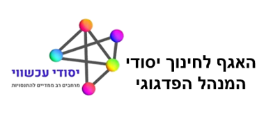

מדריך למשתמש - מאיים ליבשת STEM
מדריך למשתמש: משחק האסטרטגיה "מאיים ליבשת STEM"
המשחק מדמה תהליך אבחון ותכנון אסטרטגי הנדרש כדי להפוך יוזמות חינוכיות נקודתיות (איים) לגישה מערכתית, יציבה ומחוברת (יבשת).
רקע: חשיבות STEM והאתגר בחינוך היסודי
מהות גישת STEM
STEM מייצג את הגישה האינטגרטיבית ללימודי מדע (Science), טכנולוגיה (Technology), הנדסה (Engineering) ומתמטיקה (Mathematics). מטרתה היא להכין את התלמידים למאה ה-21 על ידי פיתוח **אוריינות STEM** – היכולת להבין את העולם המודרני, לפתור בעיות באופן יצירתי ולקבל החלטות מושכלות. בחינוך היסודי, STEM מחבר את הלמידה לתפיסת **"יסודי עכשווי"** המדגישה חקר ורלוונטיות.
האתגר החינוכי: איי STEM מבודדים
האתגר המרכזי בשטח הוא שיוזמות STEM רבות נשארות כ"איים" בודדים: הן אירוע חד-פעמי, יוזמה של מורה יחיד, או שימוש בציוד יקר ללא תוכנית פדגוגית כוללת. **האיים** הם יוזמות טובות שאינן מחוברות לתרבות הבית ספרית. **המטרה** שלכם, כמובילי חינוך, היא לבנות **גשרים** (פרקטיקות אסטרטגיות) שיחברו את כל היוזמות הללו ל**יבשת** של למידה משולבת, יציבה ובת-קיימא.
המשחק כפעילות STEM מובהקת
משחק האסטרטגיה "מאיים ליבשת STEM" הוא למעשה **סימולציה הנדסית** (Engineering Design Challenge) המופעלת על ידי המפקחים. במקום לבנות גשר פיזי, אתם בונים **גשרים מערכתיים** תוך שימוש במיומנויות הנדרשות ב-STEM:
- הנדסה (E): אתם פועלים כ"מהנדסי מערכת חינוכית" הנדרשים לתכנן אב-טיפוס (שילוב הגשרים) תחת מגבלות (תקציב נקודות). עקרון ה-E מוצג בהגדרת הבעיה ובמציאת הפתרון האופטימלי.
- מתמטיקה (M): אתם משתמשים בלוגיקה ובחישובים (עלויות הגשרים, יעילות ההשקעה) כדי להקצות את המשאבים ולקבל החלטות אסטרטגיות.
- מדע (S): שלב האבחון הוא שלב "חקר הבעיה" – עליכם לזהות את הסיבה והתוצאה (ההשלכה) המדויקות ביותר כדי שהפתרון שלכם יהיה מבוסס נתונים.
- טכנולוגיה (T): המשחק כולו מהווה כלי טכנולוגי (סימולציה) המאפשר ניסוי וטעייה בסביבה בטוחה (למידה מכישלון).
מהלך המשחק: שלב אחר שלב
- בחירת רמת מורכבות: לחצו על "בחר מספר איים" ובחרו 1 עד 4 אתגרים לאבחון.
- אבחון האתגרים: לחצו על כל אי ובחרו את ההשלכה הרלוונטית (שורש הבעיה).
- תכנון ההתערבות: גררו "גשרים" (פרקטיקות) מהרשימה אל האיים, בהתאם לתקציב.
- ניתוח התוצאות: לחצו "הפעל ובנה את היבשת!" ונתחו את הצלחת האסטרטגיה שלכם.
האיים והשלכותיהם: הכרת שלב האבחון
בשלב זה עליכם לבחור את האיים הרלוונטיים לשטח הפיקוח שלכם ולאבחן את השלכותיהם:
| האי (האתגר) | השלכה אפשרית 1 (חוסר נגישות/פער) | השלכה אפשרית 2 (חוסר המשכיות/תרבות) |
|---|---|---|
| מועדוני העשרה וימי שיא | פער נגישות ואי-שוויון: הפעילות מוגבלת לקבוצה קטנה. | חוסר רצף: אירועים קצרים אינם מספקים עומק. |
| הוראה דיסציפלינרית נפרדת | היעדר הקשר ומוטיבציה נמוכה אצל תלמידים. | החמצת פוטנציאל אינטגרטיבי בין תחומי הדעת. |
| מורה חלוץ יחיד | חוסר קיימות: התוכנית תלויה באדם בודד. | חוסר אחידות: אין חזון ושפה פדגוגית משותפת. |
| הכשרות קצרות ותיאורטיות | ביטחון עצמי נמוך של מורים ליישם את הנלמד. | קיפאון בפרקטיקה: מורים חוזרים לדפוסים ישנים. |
| ציוד יקר שאינו מנוצל | בזבוז משאבים: הטכנולוגיה לא מוטמעת בפדגוגיה. | תלות במומחה: רק מורה אחד יודע להפעיל את הציוד. |
| הערכה מסכמת בלבד | פחד מכישלון ולקיחת סיכונים אצל תלמידים. | אובדן הזדמנויות למידה מהתהליך. |
| STEM רק במעבדת המדעים | הגבלת גישה: רק תלמידים מסוימים נחשפים ל-STEM. | ניתוק מהחיים: המעבדה נתפסת כסביבה מלאכותית. |
| STEM רק בשיעורי מדע ומתמטיקה | תלמידים "לא מדעיים" מרגישים מנותקים. | צמצום הפוטנציאל היצירתי של הפרויקטים. |
הגשרים: הכרת ארגז הכלים לפתרון (פרקטיקות מפורטות)
כל "גשר" הוא פרקטיקה (דרך התערבות) שנועדה לטפל באתגרים שאובחנו ולחבר את האיים ליבשת. הכרת הפרקטיקות תאפשר לכם לבנות אסטרטגיה יעילה במסגרת התקציב.
| הגשר (הפרקטיקה) | תיאור | עלות |
|---|---|---|
| 🧩 **פדגוגיה של PBL רבעוני** | הפיכת למידה מבוססת פרויקטים (PBL) ל**מסגרת קבועה** לפתרון בעיות אמיתיות לאורך הרבעון, במקום אירוע נקודתי. מחייב שימוש אינטגרטיבי בידע מכל המקצועות. | 3 |
| 🤝 **שותפויות קהילה ולקוחות** | חיבור הלמידה לגורם חיצוני (כמו רשות, עסק או הנהלת בית הספר) המציג **אתגר אמיתי** לפתרון. זה מבטיח **רלוונטיות ואחריות אזרחית**. | 2 |
| 🔄 **ישיבות תכנון משותפות** | **הקצאת זמן רשמית** בלו"ז שבו מורים שאינם מאותו תחום (למשל, מדעים ושפה) יושבים יחד כדי לתכנן יחידות משולבות. מחבר את המשאב האנושי. | 2 |
| 📝 **תהליך התכנון ההנדסי (EDP)** | הפיכת ה-EDP למתודולוגיה המארגנת הראשית: זיהוי צורך, תכנון, בנייה, ובדיקה. זה **מחייב** את המתמטיקה והמדעים לשרת את ההנדסה. | 2 |
| 🧑💻 **רכז/מוביל STEM** | יצירת **תפקיד מנהיגותי** שאחראי על **מיסוד הידע, ליווי המורים** והבטחת **קיימות** התוכנית בבית הספר כולו. | 3 |
| 🗣️ **תיעוד ציבורי של תהליכים** | הצגת **יומני חקר, סקיצות וכישלונות** (ולא רק התוצר המוגמר) ברחבי ביה"ס. זה יוצר **תרבות של שקיפות ולמידה מטעויות**. | 1 |
| 🌳 **פיתוח מקצועי ממוקד** | הכשרות שבהן המורה מפתח **"מוצר מוגמר"** (יחידת לימוד אינטגרטיבית) מוכן ליישום מיידי, במקום רק ידע תיאורטי. | 3 |
| 📊 **ניתוח נתונים מתמטי** | שילוב כלים (דיגיטליים ו-AI) ל**איסוף, ייצוג וניתוח נתונים** בהקשר מדעי-הנדסי. מחבר את המתמטיקה ליישום פרקטי. | 2 |
| 🧱 **מרחבי יצירה גמישים (Makerspaces)** | הפיכת סביבות קיימות (ספרייה/מסדרון) ל**מרכזי יצירה זמינים לכל המורים**, המצוידים בחומרים פשוטים ובסיסיים. | 2 |
| 🌲 **שימוש במרחב החיצוני** | הפיכת ה**חצר והגינה** למעבדות למידה פעילות לניסויים, מדידות מתמטיות ותכנון הנדסי (כגון בניית מערכות איסוף מים). | 1 |
| 👑 **מנהיגות בית ספרית חזונית** | הטמעת STEM כ**ערך וכיעד מערכתי רב-שנתי** על ידי המנהל, עם הקצאת משאבים וזמן תכנון רשמי. | 3 |
ניתוח התוצאות והבנת המשמעויות
בשלב זה, המערכת תספק משוב מיידי על האסטרטגיה שלכם:
- חיבור ליבשת: איים שטופלו בהצלחה (מעל 80%) יתחברו ליבשת בגשר ירוק.
- גשרים מומלצים: תקבלו פירוט על הפרקטיקות שהיו קריטיות (גשרי הזהב) לפתרון האתגר.
- תוצאה מיטבית: תקבלו תיאור מילולי של הפתרון האידיאלי, המהווה כלי למידה חשוב להמשך עבודתכם הפיקוחית.